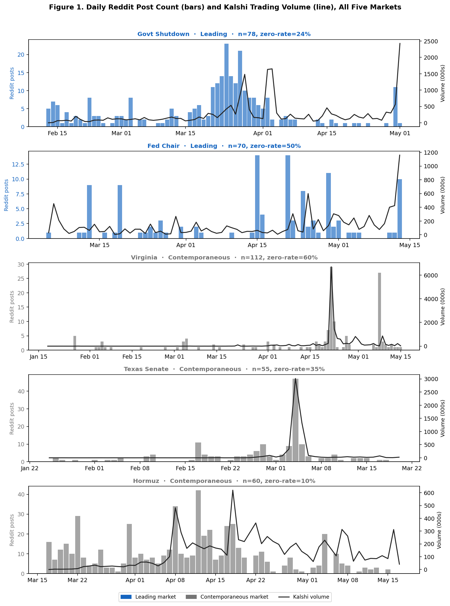
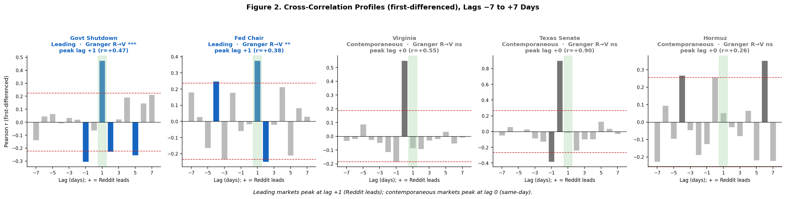

Amsterdam Business School, University of Amsterdam
BAM Thesis
May 2026
Author Note
This paper was prepared as a master's thesis for the Business Administration: Management programme at the Amsterdam Business School, University of Amsterdam. All data were collected via publicly available APIs (Kalshi Trade API v2; Reddit JSONL archives). The author declares no conflicts of interest.
Correspondence concerning this paper should be addressed to Lumina Alexandru-Stefan. Email: alexlumina10@gmail.com
This study investigates whether daily Reddit post volume about a political event Granger-causes trading volume on the corresponding Kalshi prediction market, focusing exclusively on U.S. political prediction markets — the most heavily traded category on Kalshi and the events most prominently discussed in U.S.-focused Reddit communities. Using daily candlestick data from five U.S. political prediction markets (January–May 2026) and keyword-filtered post counts from three Reddit communities dedicated to U.S. political discourse (r/politics, r/TheBulwark, r/PoliticalDiscussion), this study applies augmented Dickey-Fuller stationarity tests, Bayesian Information Criterion lag selection, and bivariate Granger causality tests in both directions, complemented by cross-correlation analysis on first-differenced series at lags −7 to +7 days. The results reveal two distinct regimes rather than a single uniform effect. For two slow-developing markets — the government shutdown length market (F(1, 73) = 21.20, p < .001) and the Federal Reserve Chair confirmation market (F(1, 65) = 8.56, p = .005) — Reddit post counts Granger-caused trading volume with a consistent one-day lead (peak cross-correlations at lag +1: r = .48 and r = .38), and no sustained reverse causality. For three markets resolved by discrete events — a redistricting referendum, a primary election, and a geopolitical crisis — Reddit and trading volume instead move contemporaneously (same-day), with no one-day lead. Critically, the crisis market (Strait of Hormuz) exhibited the highest Reddit engagement of all five (zero-rate = 10%) yet showed no lead, demonstrating that the predictive lead depends on event tempo — whether public attention accumulates ahead of trading — rather than on the sheer volume of attention. The findings support a bounded claim: Reddit functions as a leading indicator for slow-burn political processes and as a contemporaneous indicator for shock-resolution events. They contribute to the literature on social media as a financial information source and offer a methodological framework for distinguishing leading from coincident online-discourse signals.
Keywords: prediction markets, social media, Reddit, Granger causality, political markets, information transmission, trading volume, Kalshi
The relationship between public discourse and financial markets has attracted sustained scholarly attention since the advent of digital communication. The question of whether what people say — and when they say it — contains information that moves prices and volumes in financial markets is not merely academic. It has implications for market efficiency theory, the design of information aggregation mechanisms, and the broader question of how democracies process political information. The emergence of social media as a dominant medium for political discussion, and the parallel rise of retail-accessible prediction markets, creates a new and underexplored intersection: does the volume of online political discussion about an event reliably predict trading activity in markets designed to forecast that event's outcome?
This study addresses that question using data from Reddit — the largest English-language political discussion forum — and Kalshi, a regulated U.S. prediction market exchange that allows participants to trade binary and multi-outcome contracts on political and other events. The specific research question is: does daily Reddit post volume about a political event Granger-cause daily trading volume in the corresponding Kalshi prediction market, and if so, with what lead time?
The analysis focuses exclusively on U.S. political prediction markets for two reasons. First, U.S. political events — major legislative outcomes, executive appointments, and prominent primaries — constitute the most heavily traded category on Kalshi by contract volume, reflecting the concentration of retail and professional political bettors in the U.S. political arena. Second, U.S. politics is by far the most prominent category of political discussion on the Reddit communities used in this study: r/politics is explicitly dedicated to U.S. political news, and r/TheBulwark is a U.S.-focused political commentary community. This alignment between the Reddit source and the prediction market category is a precondition for the information channel hypothesis: markets for non-U.S. political events would lack a natural Reddit counterpart, making the channel inactive by construction. Markets involving foreign political events or non-political topics are therefore excluded from scope.
The intuition underlying this question is straightforward. If Reddit discussion reflects and aggregates distributed public attention to a political event, then a surge in Reddit posts may indicate growing public salience — a condition that, with a short lag, translates into increased trading activity as more market participants become aware of and engage with the corresponding prediction market. Alternatively, prediction market activity itself may attract media coverage that subsequently generates Reddit discussion, reversing the causal arrow. Establishing which direction dominates — or whether both are simultaneously present — has implications for understanding the role of retail-level online discourse in information transmission between the public and financial markets.
An important interpretive caveat applies throughout: both Reddit post volume and Kalshi trading volume are observable proxies for underlying information processes, not the processes themselves. The Granger causality test measures temporal priority — whether one proxy contains information about the future values of the other, above and beyond that proxy's own history — but does not identify the structural mechanism. Three mechanisms are broadly consistent with a Reddit-leads-volume finding: Reddit discussion directly attracts previously uninformed traders to the market; both Reddit and trading activity respond to the same external news events, with Reddit reacting marginally faster due to lower transaction costs; or Reddit activity influences media coverage, which in turn influences market participants. The present study establishes predictive precedence, not structural causality, and the discussion of mechanisms remains necessarily speculative.
The present study makes three contributions. First, it provides direct empirical evidence on the Reddit-to-prediction-market information channel using a novel dataset covering five U.S. political markets across the January–May 2026 period. Second, it applies a rigorous time-series econometric framework — incorporating stationarity testing, vector autoregression, and Granger causality — to a domain (political prediction markets) that has received limited treatment with these methods. Third, and perhaps most importantly, it shows that the Reddit-to-market relationship is not uniform: whether Reddit leads trading depends on the temporal structure of the underlying event. For slow-developing processes — a protracted shutdown negotiation, a drawn-out confirmation fight — public attention accumulates over days and Reddit leads trading by approximately one day. For events that resolve in a single shock — a referendum vote, an election night, a geopolitical flashpoint — Reddit and trading react to the same news simultaneously, producing a contemporaneous association with no lead. Decisively, the market with the most Reddit attention (the Strait of Hormuz crisis) shows no lead at all, ruling out the simpler hypothesis that the lead is a function of attention volume. This reframes the research question from "does Reddit predict prediction markets?" to "for which events does Reddit lead, rather than merely accompany, prediction market activity?", which is a more theoretically precise and practically useful formulation.
The remainder of this paper is structured as follows. The Theoretical Background situates the study within existing research on prediction markets as information aggregators, social media as financial information, and Granger causality applied to online discourse, concluding with the formal hypotheses. The Methodology section describes the Kalshi and Reddit data sources, keyword filtering approach, and time-series procedures. Results are presented across the five markets, distinguishing those in which Reddit leads trading from those in which the two co-move contemporaneously. The Discussion interprets the findings in light of the leading-versus-contemporaneous distinction and the role of event tempo, with Limitations and a concluding summary as subsections.
Prediction markets are exchange-traded contracts whose payoffs are contingent on the outcome of a future event, thereby creating financial incentives for participants to reveal their private beliefs about that outcome (Wolfers & Zitzewitz, 2004). The theoretical basis for their information-aggregating properties is rooted in Hayek's (1945) insight that prices in competitive markets efficiently summarise dispersed private knowledge, and in the rational expectations tradition that treats market prices as sufficient statistics for the aggregate of privately held information (Lucas, 1972). Arrow et al. (2008) argued in a prominent Science commentary that prediction markets represent one of the most reliable known mechanisms for aggregating probabilistic beliefs about future events.
Empirically, the information efficiency of prediction markets has been documented most thoroughly in electoral contexts. Studies using the Iowa Electronic Markets have repeatedly shown that political prediction markets outperform polling averages in forecasting U.S. presidential election outcomes (Berg et al., 2008). Snowberg et al. (2012) demonstrated that these forecasts are consistent with rational expectations and contain genuine predictive information beyond what is available from traditional polling. Rothschild (2009) found that prediction market prices adjust to incorporate new polling information within hours of publication.
Despite their theoretical efficiency, prediction markets are not immune to noise. Uninformed or sentiment-driven traders can temporarily move prices away from their efficient levels, particularly in thin markets with limited participation. Wolfers and Zitzewitz (2006) noted that prediction market prices can be influenced by liquidity and risk-aversion considerations that cause them to deviate from true implied probabilities. It is precisely in this context — the gap between efficient prices and actual trading behaviour — that social media activity may play a role. If Reddit discussion attracts new, potentially less-informed traders to a market, this could generate volume surges that lag slightly behind the information events that prompted the discussion.
The question of whether social media content contains information that moves financial markets has generated a substantial empirical literature over the past fifteen years. The seminal study by Bollen et al. (2011) demonstrated that sentiment derived from Twitter posts was predictive of daily changes in the Dow Jones Industrial Average, with a lead time of two to six days. Subsequent work has explored this relationship across a wide range of asset classes and platforms.
Da et al. (2011) used Google search volume as a direct measure of investor attention and showed that increases in search activity for individual stocks predicted higher prices in the subsequent two weeks, with subsequent reversals consistent with attention-driven demand rather than fundamental information. This attention-based mechanism is directly relevant to the present study: Reddit post volume, like search volume, proxies for public attention to an event, and the hypothesised mechanism is that increased attention translates into increased prediction market participation.
Tetlock (2007) demonstrated that media pessimism — measured by the negative word frequency in the Wall Street Journal's "Abreast of the Market" column — predicted lower stock returns, with the effect reversing over subsequent weeks in a pattern consistent with noise trader activity. Tetlock et al. (2008) extended this to earnings announcement contexts, showing that the fraction of negative words in firm-specific news articles predicted both accounting earnings and stock returns. These studies established the methodological precedent for treating textual volume metrics from media and online sources as proxies for information flow.
Sprenger et al. (2014) examined the information content of stock-related microblogs and found that message volume predicted abnormal returns and trading volume, with the predictive power concentrated in posts from users with high historical accuracy. Chen et al. (2014) analysed Seeking Alpha articles and user comments, finding that article content and comment sentiment predicted future returns beyond what was captured by standard risk factors. Cookson and Niessner (2020) showed that investor disagreement expressed on social platforms — measured by the dispersion of opinion on StockTwits — predicted subsequent trading volume, directly linking online discussion intensity to market activity.
A consistent theme in this literature is that social media effects on financial variables are heterogeneous: they are strongest when the platform is relevant to the event being traded, when engagement is sufficiently high to constitute a meaningful signal, and when the user base has some genuine informational connection to the underlying fundamentals. A subtler dimension, less emphasised in this literature, concerns timing: for social-media activity to lead a market rather than merely coincide with it, there must be a temporal gap between the moment attention forms and the moment it is acted upon. The present study isolates exactly this condition, showing that the Reddit lead is present for slowly-developing events but collapses to a contemporaneous association when an event resolves in a single news shock.
Reddit occupies a distinctive position among social media platforms as both a political discussion forum and, in certain communities, a direct coordination mechanism for retail market activity. The WallStreetBets community's role in the 2021 GameStop short squeeze demonstrated that Reddit can serve as an explicit coordination platform for trading (Lyócsa et al., 2022; Hasso et al., 2022). However, the mechanism in the present study is different: rather than examining Reddit as a direct coordination platform for trading in the same asset, this study treats Reddit political discourse as a signal of public attention and salience that may propagate into prediction market activity.
Reddit's r/politics community, with tens of millions of subscribers, serves as one of the primary venues for national U.S. political discussion online. Its post volume on a given topic is a reasonable proxy for the degree to which that topic has penetrated the national political conversation. Unlike Twitter (now X), where political content is mixed with entertainment and celebrity discussion, r/politics is explicitly dedicated to U.S. political news, making keyword-filtered post volume a relatively clean measure of event-specific public attention for U.S. political events.
The specific subreddits used in this study — r/politics, r/TheBulwark, and r/PoliticalDiscussion — represent three complementary U.S. political information communities. r/politics is the largest U.S. politics community on Reddit and provides the broadest measure of national political attention. r/TheBulwark is a community associated with the centre-right political commentary outlet of the same name, capturing politically engaged, ideologically moderate U.S.-focused discussion. r/PoliticalDiscussion is a moderated forum oriented toward substantive, in-depth analysis of U.S. political developments, complementing the high-volume, fast-moving character of r/politics with a more deliberative discussion stream. All three communities are tightly aligned with U.S. political events, making keyword-filtered post counts from these sources a coherent signal of U.S.-specific public attention. Communities focused primarily on financial trading rather than political news — such as r/WallStreetBets — were excluded because their posting behaviour reflects financial market sentiment rather than political discourse, introducing a confound that would obscure the political information channel under investigation.
Prior research on Reddit and prediction markets specifically is sparse. Mao et al. (2011) examined social media mood and prediction market prices, finding that positive sentiment on Twitter predicted increases in prediction market prices for economic indicators. However, their study used price as the dependent variable rather than trading volume, and did not focus on the lead-lag structure that is the central interest here. The distinction matters conceptually: prediction market prices reflect participants' aggregate probability estimates for an event outcome, and are most sensitive to information that updates those estimates. Trading volume, by contrast, reflects participation intensity — the number of contracts that change hands, regardless of the direction of price movement. An attention-based mechanism would be expected to manifest first in volume, as newly aware participants enter the market, and only secondarily in prices, as those participants' beliefs are aggregated. Volume is therefore the more direct dependent variable for testing whether online public attention propagates into market activity.
A further gap concerns the magnitude and timing of the lead. Bollen et al. (2011) reported a Twitter-to-DJIA lag of two to six days; Da et al. (2011) documented a one-to-two-week Google search-to-stock-price lag. These relatively long leads likely reflect the indirect route from general sentiment signals to large, diversified financial market indices. The one-day lead documented in the present study is substantially shorter, consistent with a more direct information pathway: the politically engaged population that uses r/politics to follow national political events likely overlaps substantially with the retail participant base of political prediction markets, compressing the lag from public salience to market activity relative to the indirect routes studied in the equity market literature. The present study is therefore best positioned not as a replication of equity-market social-media results but as a test of a more specific hypothesis about direct audience overlap between a dedicated political discussion platform and a political prediction market.
The concept of Granger causality (Granger, 1969) provides the statistical framework for assessing whether one time series contains information about the future values of another, above and beyond what the target series itself contains. Formally, a series X Granger-causes series Y if lagged values of X are significant predictors of Y in a regression that already controls for lagged values of Y. The test does not establish structural or physical causation; it establishes predictive precedence, which is the appropriate concept for the information transmission hypothesis examined here.
Granger causality has been widely applied in the social media and finance literature. Bollen et al. (2011) used Granger tests to establish the temporal precedence of Twitter sentiment over stock returns. Antweiler and Frank (2004) applied vector autoregression to internet message board posts and found bidirectional Granger causality between message volume and stock market volatility — a finding that highlights the importance of testing both directions, as the present study does. Ruiz et al. (2012) demonstrated Granger causality from Twitter activity to stock trading volume across a sample of NYSE-listed firms.
A key methodological concern in applying Granger causality to social media and financial data is stationarity. Both social media post counts and trading volumes typically exhibit non-stationary behaviour — trending upward over time, or exhibiting structural breaks around news events — that can produce spurious Granger causality if the series are not properly pre-processed (Toda & Yamamoto, 1995). The present study follows standard practice by applying augmented Dickey-Fuller tests and first-differencing non-stationary series prior to Granger testing (Dickey & Fuller, 1979).
A distinctive feature of political prediction markets — as opposed to equity markets — is the segmentation of their participant bases by the type and scale of political event being traded. For major national events such as presidential elections, congressional control, or high-profile legislative battles, the participant pool includes both retail participants drawn from the national political conversation and professional or semi-professional political bettors. For state and local races, the participant pool narrows sharply: active traders are typically political operatives with inside knowledge of local polling and campaign dynamics, professional bettors who follow state-level races as a specialised activity, and niche analysts with access to local information networks (Snowberg et al., 2012).
This segmentation implies that the information channels connecting online discourse to market activity will differ by event type. For national events, Reddit political discourse and prediction market trading may share a common information set — both responding to the same national news cycle — making the Reddit-to-volume lead plausible. For local events, Reddit has little to say, but substantial informed trading still occurs, driven by channels (local press, private polling, partisan communications) that are not captured by national social media data. The implication is that the absence of Reddit coverage in state and local markets is not a gap in the data but a structural feature of those markets' information environments, with direct implications for which markets are in-scope for the research hypothesis.
Based on the theoretical framework and prior literature, three formal hypotheses are advanced:
Hypothesis 1 (Reddit Leads Volume). Daily Reddit post counts related to a political event will Granger-cause daily trading volume in the corresponding Kalshi prediction market, with an approximately one-day lead, in markets covering events that develop gradually over time.
This hypothesis is grounded in the attention-based mechanism of Da et al. (2011) and the social media-to-volume link documented by Cookson and Niessner (2020). The one-day lead is motivated by the daily granularity of the data and the plausible mechanism: a Reddit discussion spike on day t attracts additional participants to the market who place trades on day t + 1.
Hypothesis 2 (Directional Asymmetry). The reverse relationship — Kalshi trading volume Granger-causing Reddit post counts — will not be sustained beyond a single lag in markets where Reddit leads volume.
If the effect were bidirectional and sustained, it would indicate that Reddit and trading volume are jointly responding to the same external news events rather than one leading the other, which would undermine the information channel interpretation. Unidirectionality is a necessary condition for interpreting the Reddit-to-volume relationship as an information channel rather than a spurious correlation driven by common news shocks.
Hypothesis 3 (Event Tempo Conditions the Lead). The one-day Reddit-to-volume lead will be present for slowly-developing events — those whose resolution unfolds over many days, allowing public attention to accumulate ahead of trading — and absent for events that resolve in a single, discrete news shock, for which Reddit and trading volume will instead exhibit a contemporaneous (same-day) association. The presence of the lead will not be a function of the sheer volume of Reddit attention.
This hypothesis reframes the boundary condition of the effect in terms of the event's temporal structure rather than its attention level. For a lead to exist, there must be a gap in time between the formation of public attention and its translation into trades; slowly-developing processes create such a gap, whereas shock-resolution events compress it to zero, so that attention and trading react to the same headline within the same day. The clause that the lead is not a function of attention volume yields a sharp, falsifiable prediction: a market with very high Reddit engagement but a shock-driven resolution should display a contemporaneous association and no lead, distinguishing this hypothesis from a simple "more attention, stronger signal" account.
Kalshi prediction market data were obtained via the publicly accessible Kalshi Trade API (v2), which provides daily OHLCV (open, high, low, close, volume) candlestick data for individual market contracts. The study is scoped exclusively to U.S. political prediction markets — the most heavily traded category on Kalshi by contract volume during the study period. Markets covering non-U.S. political events or non-political topics were excluded from consideration, as the Reddit communities used in this study (r/politics, r/TheBulwark) are dedicated to U.S. political discourse and would not provide a meaningful information channel for foreign or non-political markets. Within this scope, five markets were selected based on two criteria: (1) settlement occurred between January 1 and May 17, 2026, ensuring that the full market lifecycle fell within the available Reddit data window; and (2) total trading volume exceeded 1 million contracts, ensuring a sufficient level of market activity for time-series analysis. Markets settled after May 17, 2026 but with active trading during the Reddit data window were also considered, with analysis restricted to the overlapping period.
For events with multiple constituent sub-markets (e.g., the Virginia redistricting referendum, where separate contracts traded the binary outcome and the margin of victory), daily trading volumes were aggregated across all sub-markets into a single composite series. This aggregation is appropriate because the underlying informational driver — public discussion of the event — is common to all sub-markets. The Hormuz market is a "when will it happen?" event composed of cumulative deadline contracts ("will traffic return to normal before date D?"); for this event the daily volumes of the four sub-markets that had finalized within the study window were summed, while sub-markets still trading toward later 2026–2027 horizons were excluded. The settlement day (final trading day) was excluded from all markets to avoid contamination from mechanical position-closing activity, which generates anomalously high volume unrelated to information-driven trading; for the Hormuz composite, which contains several deadline contracts resolving on different dates, the two sub-market settlement days falling inside the analysis window were likewise removed.
The five markets, along with their tickers, settlement dates, and total volumes, are described in Table 1.
Table 1
Kalshi Prediction Markets Included in the Analysis
| Market | Ticker | Description | Settled | Total Volume |
|---|---|---|---|---|
| Govt Shutdown | KXGOVTSHUTLENGTH-26FEB07 | How long will the government shutdown last? | May 2, 2026 | 20.5M |
| Fed Chair | KXFEDCHAIRCONFIRM | Federal Reserve Chair confirmation | May 13, 2026 | 9.8M |
| Virginia | KXVIRGINIAREDISTRICT (combined) | Virginia redistricting referendum (combined) | Apr 22 / May 16, 2026 | 16.2M |
| Texas Senate | KXTXSENDPRIMARYMOV-26MAR03 | Texas Senate Democratic primary margin | Mar 20, 2026 | 5.5M |
| Hormuz | KXHORMUZNORM-26MAR17 | When will Strait of Hormuz traffic return to normal? (finalized threshold sub-markets) | Apr 21 – Jun 2, 2026 | 10.2M |
Note. Total volume is the sum of all sub-market contracts for multi-market events. For Hormuz, only the four finalized threshold sub-markets are included (the event also contains sub-markets still trading at later horizons, which are excluded). Settlement day excluded from analysis for all markets; for Hormuz, the two intra-window sub-market settlement days are removed.
Reddit post data were drawn from three subreddits focused exclusively on U.S. political discourse: r/politics (62,355 posts, January 1–May 17, 2026), r/TheBulwark (5,801 posts, December 3, 2025–March 28, 2026), and r/PoliticalDiscussion (5,578 posts, January 1–June 9, 2026). All three communities are dedicated to U.S. political news and commentary: r/politics is the largest general-purpose U.S. politics forum on Reddit, r/TheBulwark is a politically engaged centre-right commentary community, and r/PoliticalDiscussion is a moderated forum for substantive political analysis. Combining the three broadens coverage of the political-attention signal while preserving its U.S.-political focus. A fourth candidate subreddit, r/WallStreetBets (a financial trading community), was considered but excluded: its posts reflect retail investor sentiment about financial markets rather than political discourse, and its inclusion would introduce a non-political signal source into a study designed to measure the effect of political public attention on prediction market trading. The three communities differ in their temporal coverage — r/TheBulwark data end on March 28, 2026, so for markets whose trading windows extend into April–May the signal is carried predominantly by r/politics and r/PoliticalDiscussion. Posts were archived in JSONL format, with each record containing a UTC timestamp and post title. Only post titles — rather than body text — were used for keyword filtering, as titles are the primary unit of information presentation on Reddit and are more consistently populated across posts.
For each market, a set of event-specific keywords was constructed to identify posts relevant to that event, applied as case-insensitive regular expressions to post titles. The keyword sets were designed to maximise precision — capturing posts genuinely about the target event while excluding superficially similar but unrelated discussion. The Government Shutdown set matched shutdown, continuing resolution, CR, and DHS funding. The Hormuz set matched the single highly specific term hormuz (the broader term iran was deliberately excluded, as it matched thousands of unrelated foreign-policy posts). The Fed Chair set matched fed chair, federal reserve chair, fed chairman, the nominee's surname (Warsh, bounded to avoid matching "warship"), fed pick, fed nominee, and Powell. The Texas Senate set required the term texas together with one of senate, primary, runoff, or the candidate name Talarico, while excluding posts referring to the unrelated Texas state senate special election. The Virginia set required virginia together with one of redistrict, gerrymander, or referendum, while excluding west virginia. Daily post counts were computed as the number of posts across all three subreddits whose titles matched the event's keyword set; days with no matching posts were assigned a count of zero.
For each market, the daily Kalshi volume series and the daily Reddit post count series were merged by date, with Kalshi trading dates forming the basis. Reddit counts were set to zero on days not present in the Reddit data for that keyword filter. The final merged dataset covers 55 to 112 daily observations per market, depending on the market's trading window and settlement date.
One descriptive feature of the merged data is the Reddit zero-rate — the proportion of days in a market's trading window on which the keyword filter returned zero Reddit posts. This statistic varies across markets, from 10% for the Hormuz market (where the keyword "hormuz" is highly specific yet matched on nearly every day of the crisis) to 60% for the Virginia redistricting market. The Reddit zero-rate is reported throughout as a proxy for the volume of Reddit engagement. As the results will show, however, engagement volume is not what determines whether Reddit leads trading: the Hormuz market combines the lowest zero-rate of all five markets with no detectable lead, so the zero-rate is descriptive rather than the central interpretive variable.
Descriptive statistics for all five markets are presented in Table 2.
Table 2
Descriptive Statistics for Reddit Post Count and Kalshi Trading Volume by Market
| Market | n | Reddit Zero-Rate | Reddit M (SD) | Reddit Max | Volume M (SD) | Volume Max |
|---|---|---|---|---|---|---|
| Govt Shutdown | 78 | 24% | 3.64 (4.70) | 23 | 257,431 (394,490) | 2,427,375 |
| Fed Chair | 70 | 50% | 1.70 (3.25) | 14 | 130,453 (171,363) | 1,159,213 |
| Virginia | 112 | 60% | 1.29 (3.92) | 29 | 143,608 (656,757) | 6,700,128 |
| Texas Senate | 55 | 35% | 2.89 (6.62) | 47 | 99,302 (440,403) | 3,015,653 |
| Hormuz | 60 | 10% | 9.05 (8.87) | 42 | 132,588 (122,215) | 620,009 |
Note. Reddit Zero-Rate = proportion of days with zero keyword-matched posts across r/politics, r/TheBulwark, and r/PoliticalDiscussion. Volume statistics are in number of contracts. M = mean; SD = standard deviation. Settlement day excluded. Hormuz figures are for the composite of finalized threshold sub-markets over the Mar 17–May 17 window.
Figure 1
Daily Reddit Post Count (Grey Bars) and Kalshi Trading Volume (Coloured Line) for All Five Markets

Note. Left y-axis (grey): daily Reddit keyword-matched post count across the three communities. Right y-axis (coloured): daily Kalshi trading volume in thousands of contracts. Bar colour indicates regime: blue = Leading (significant one-directional Reddit → Volume Granger causality with a cross-correlation peak at lag +1); grey = Contemporaneous (cross-correlation peak at lag 0, no one-day lead). Settlement day excluded. Annotation boxes show Granger Reddit → Volume significance and the location of the peak cross-correlation.
Both series exhibit strong positive skewness across all markets, consistent with the distributional properties typical of count data and financial trading volumes. The variation in Reddit zero-rate across markets is substantively meaningful and not a data quality artefact: nationally prominent events generate sustained Reddit activity, while niche markets attract little to no matching discussion in the subreddits studied.
The analysis proceeds through five sequential steps: stationarity testing, first-differencing where required, lag order selection via the Bayesian Information Criterion (BIC), Granger causality testing in both directions, and cross-correlation analysis. All analyses were conducted in Python 3.9 using statsmodels (version 0.14) and scipy (version 1.10).
Granger causality tests are only valid when all series in the bivariate model are stationary (Engle & Granger, 1987). A non-stationary series — one with a unit root — produces spurious regression results, inflating test statistics and generating misleading p-values. The Augmented Dickey-Fuller (ADF) test (Dickey & Fuller, 1979) was applied to each raw series to assess the presence of a unit root. The ADF test checks for non-stationarity by estimating the following regression:
Δyt = α + βt + γyt−1 + δ1Δyt−1 + δ2Δyt−2 + ··· + δpΔyt−p + εt
where Δyt = yt − yt−1 is the first difference of the series (today's value minus yesterday's); yt−1 is the lagged level of the series; γ is the key coefficient — if γ = 0, the series contains a unit root and is non-stationary; δ1 … δp are coefficients on lagged differences, included to absorb any remaining autocorrelation in the residuals and ensure the test statistic is valid; α is a constant; and βt is an optional time trend. The null hypothesis H0: γ = 0 (unit root present; series is non-stationary) is tested against the alternative H1: γ < 0 (no unit root; series is stationary). Rejection at p < .05 is taken as evidence of stationarity. Lag length p within the ADF procedure was selected automatically via the Akaike Information Criterion (AIC), which balances model fit against over-parameterisation by penalising unnecessary lags.
For the primary specification, all series were first-differenced (Δyt = yt − yt−1), regardless of their levels stationarity. This uniform treatment is adopted for two reasons. First, it places every market on an identical footing, so that Granger and cross-correlation results are directly comparable across markets. Second, and more importantly, even series that are stationary in levels retain first-order autocorrelation that can induce spurious lag-1 Granger causality: when the predictor is persistent, its lagged value proxies for its contemporaneous value, so a genuinely same-day relationship can masquerade as a one-day lead. First-differencing removes this persistence and is therefore the conservative choice for lead–lag inference. As the Results show, this distinction is not hypothetical — for the Virginia market, a forward Granger effect that is significant on levels (p = .004) becomes non-significant once the series are differenced (p = .056), while its cross-correlation peaks unambiguously at lag 0. The Granger tests on the levels series are therefore retained as a robustness check and reported alongside the differenced results; the divergence between the two specifications is itself diagnostic. ADF re-tests confirm that all differenced series are stationary (p < .001 in every case).
The lag order for the Granger causality test determines how many days of history are included in the predictive model. Too few lags may miss delayed relationships; too many lags consume degrees of freedom and reduce power, which is a serious concern in samples of 55–112 observations. A Vector Autoregression (VAR) model was estimated on the bivariate (possibly differenced) series for each market, and the lag order minimising the Bayesian Information Criterion (BIC; Schwarz, 1978) was selected. The BIC was preferred over the AIC because it applies a stronger penalty for additional parameters, making it more conservative — an appropriate choice given the relatively small sample sizes. Two constraints limit the maximum lag tested. First, a practical cap of p = 5: for daily data, five days corresponds to one trading week and represents the natural periodicity for short-horizon financial time series; lags beyond this have no strong theoretical motivation and are not reported in the daily financial time-series literature. Second, an n/10 data-driven cap: each additional lag adds two parameters to estimate (one for each variable), and the rule of thumb that a model should have no fewer than ten observations per parameter implies maximum lag ≤ n/10. The effective maximum is min(5, ⌊n/10⌋), which equals 5 for all five markets in this study (the smallest, Texas Senate at n = 55, comfortably permits five). Because BIC identifies the lag with the best fit-complexity trade-off rather than the true population lag, Granger tests were also conducted at neighbouring lags from 1 through min(5, BIC lag + 2). This serves as a specification robustness check: if the Reddit → Volume effect only appears at exactly the BIC-selected lag and disappears one or two lags above, the result could reflect an artefact of the specific model chosen rather than a genuine predictive relationship. A robust finding should be visible across a range of reasonable lag specifications. Full per-lag results for all markets are reported in Appendix A.
To make the degrees-of-freedom constraint concrete, consider the VAR equation estimated for each lag order p:
Volumet = a1Volumet−1 + ··· + apVolumet−p + b1Redditt−1 + ··· + bpRedditt−p + c + εt
At lag p, this equation contains 2p + 1 free parameters (p volume lags, p Reddit lags, and a constant). Each additional lag therefore adds two parameters while simultaneously consuming one observation as additional history. The ratio of usable observations to estimated parameters — a direct measure of how thinly the data are spread — deteriorates rapidly at higher lags. A conventional rule of thumb in econometrics requires at least 10 observations per parameter for reliable estimation (Greene, 2012).
The Granger causality test (Granger, 1969) compares a restricted VAR model — in which each variable is regressed only on its own lagged values — against an unrestricted model that also includes lagged values of the other variable. The test statistic is an F-ratio of the residual sums of squares from the restricted and unrestricted models:
F = [(RSSR − RSSU) / q] / [RSSU / (T − k)]
where RSSR and RSSU are the restricted and unrestricted residual sums of squares, q is the number of restrictions (equal to the lag order), T is the number of observations, and k is the number of estimated parameters in the unrestricted model. A significant F-statistic indicates that lagged values of the predictor variable contain information about the target variable beyond what the target's own history contains.
Both directions were tested for every market: Reddit post count → Kalshi volume (Reddit leads Volume) and Kalshi volume → Reddit post count (Volume leads Reddit). Testing the reverse direction serves as a specificity check. If volume also Granger-causes Reddit, the relationship is bidirectional, and the interpretation of Reddit as an independent leading indicator is weakened. A finding of unidirectional Reddit → Volume Granger causality — significant in the forward direction, not sustained in the reverse — is the result predicted by the information channel hypothesis.
Granger causality tests provide binary hypothesis test results but do not describe the temporal shape of the relationship — in particular, whether a predictive relationship reflects a genuine lead (a peak at a positive lag) or a contemporaneous co-movement (a peak at lag 0). Cross-correlation analysis was conducted to complement the Granger tests by computing the Pearson correlation between the Reddit series at time t and the volume series at time t + k, for lags k from −7 to +7 days. Positive lags indicate Reddit leading volume; negative lags indicate volume leading Reddit. A 95% confidence band of ±1.96/√n was applied as an approximate threshold under the white-noise null. To isolate lead-lag dynamics from shared trends, all cross-correlations were computed on the first-differenced series for every market. This is essential for the leading-versus-contemporaneous distinction: on raw levels, two series that both trend upward toward an event produce a large contemporaneous correlation that can spill into adjacent lags and mimic a lead. Differencing removes the common trend, so that a peak at lag +1 reflects a genuine one-day-ahead relationship in the day-to-day changes, while a peak at lag 0 reflects same-day co-movement.
Table 3 reports, for each market, whether the raw Reddit and trading-volume series are statistically stable over time or instead drift — and the resulting pre-processing decision. Govt Shutdown, Fed Chair, and Hormuz each contain at least one drifting (non-stationary) series; Virginia and Texas Senate are stable in levels. For the primary analysis all five markets are nonetheless analysed as day-to-day changes (first differences; Methodology, Step 2) — including the two stable markets, because their Reddit series still carry enough day-to-day persistence (0.30 and 0.32) to manufacture a false one-day lead if left untransformed. The original levels results are retained as a robustness check (Table 5).
Table 3
Augmented Dickey–Fuller Unit-Root Tests on the Raw Series, and Pre-Processing Decision
| Market | Series | ADF statistic | p | Conclusion | Pre-processing |
|---|---|---|---|---|---|
| Govt Shutdown | Reddit post count | −2.26 | .184 | Non-stationary | Differenced |
| Kalshi volume | −1.14 | .700 | Non-stationary | ||
| Fed Chair | Reddit post count | −7.51 | < .001 | Stationary | Differenced |
| Kalshi volume | 0.10 | .966 | Non-stationary | ||
| Virginia | Reddit post count | −7.69 | < .001 | Stationary | Differenced |
| Kalshi volume | −8.12 | < .001 | Stationary | ||
| Texas Senate | Reddit post count | −5.18 | < .001 | Stationary | Differenced |
| Kalshi volume | −4.48 | < .001 | Stationary | ||
| Hormuz | Reddit post count | −1.90 | .334 | Non-stationary | Differenced |
| Kalshi volume | −2.27 | .182 | Non-stationary |
Note. Augmented Dickey–Fuller (ADF) unit-root tests on the raw (levels) series. The null hypothesis is the presence of a unit root (non-stationarity); a series is concluded to be stationary when the null is rejected at p < .05, indicating it is statistically stable over time rather than drifting. The test regression includes an intercept, and the augmentation lag length was selected by the Akaike Information Criterion. All five markets were first-differenced (analysed as day-to-day changes) for the primary analysis — including the two markets that are stationary in levels (Virginia, Texas Senate) — because their Reddit series retain sufficient day-to-day persistence to risk a spurious one-day lead; see Methodology (Step 2) and the levels-versus-differenced robustness check in Table 5.
All five markets were first-differenced for the primary specification (Methodology, Step 2). Table 3a reports ADF statistics for the differenced series; stationarity is confirmed for every series at p < .001, so the differenced data are valid inputs to the Granger and cross-correlation tests.
Table 3a
ADF Stationarity Test Results After First Differencing
| Market | Series | ADF Statistic | p-value | Stationary? |
|---|---|---|---|---|
| Govt Shutdown | ΔReddit post count | −5.17 | < .001 | Yes |
| ΔKalshi volume | −6.27 | < .001 | Yes | |
| Fed Chair | ΔReddit post count | −7.36 | < .001 | Yes |
| ΔKalshi volume | −11.41 | < .001 | Yes | |
| Virginia | ΔReddit post count | −8.69 | < .001 | Yes |
| ΔKalshi volume | −6.63 | < .001 | Yes | |
| Texas Senate | ΔReddit post count | −6.27 | < .001 | Yes |
| ΔKalshi volume | −7.48 | < .001 | Yes | |
| Hormuz | ΔReddit post count | −6.82 | < .001 | Yes |
| ΔKalshi volume | −9.36 | < .001 | Yes |
Note. Δ denotes the first-differenced series (yt − yt−1). All five markets are first-differenced for the primary specification.
Table 3b reports the BIC-selected lag order and observations-per-parameter diagnostics for all five differenced markets. BIC selects lag 1 for four of the five markets; for Virginia, BIC is effectively tied between lags 1 and 2 (the two scores differ by less than 0.01), and lag 1 is adopted uniformly for comparability and consistency with the one-day-lead hypothesis. (The implications of Virginia's lag-2 specification are addressed directly in the robustness analysis of Step 4.) At lag 1, observations per parameter range from 17.7 (Texas Senate) to 36.7 (Virginia), comfortably above the rule-of-thumb minimum of 10 in every case — including the Hormuz market, analysed here as the composite of the four finalized "return to normal" threshold sub-markets (n = 60), which yields 19.3 observations per parameter. No market's result can therefore be attributed to insufficient power.
Table 3b
Lag Order Selection Diagnostics: Observations per Parameter and BIC Score by Lag
| Market | Lag p | Usable n | Parameters | Obs / Param | BIC |
|---|---|---|---|---|---|
| Govt Shutdown (n = 78) | 1 | 76 | 3 | 25.3 | 28.05 ← |
| 2 | 75 | 5 | 15.0 | 28.18 | |
| 3 | 74 | 7 | 10.6 | 28.30 | |
| 4 | 73 | 9 | 8.1 ⚠ | 28.40 | |
| 5 | 72 | 11 | 6.5 ⚠ | 28.64 | |
| Fed Chair (n = 70) | 1 | 68 | 3 | 22.7 | 26.83 ← |
| 2 | 67 | 5 | 13.4 | 26.95 | |
| 3 | 66 | 7 | 9.4 ⚠ | 27.13 | |
| 4 | 65 | 9 | 7.2 ⚠ | 27.28 | |
| 5 | 64 | 11 | 5.8 ⚠ | 27.33 | |
| Virginia (n = 112) | 1 | 110 | 3 | 36.7 | 29.69 ← |
| 2 | 109 | 5 | 21.8 | 29.69 | |
| 3 | 108 | 7 | 15.4 | 29.75 | |
| 4 | 107 | 9 | 11.9 | 29.85 | |
| 5 | 106 | 11 | 9.6 ⚠ | 30.01 | |
| Texas Senate (n = 55) | 1 | 53 | 3 | 17.7 | 28.23 ← |
| 2 | 52 | 5 | 10.4 | 28.46 | |
| 3 | 51 | 7 | 7.3 ⚠ | 28.63 | |
| 4 | 50 | 9 | 5.6 ⚠ | 28.88 | |
| 5 | 49 | 11 | 4.5 ⚠ | 29.07 | |
| Hormuz (n = 60) | 1 | 58 | 3 | 19.3 | 27.97 ← |
| 2 | 57 | 5 | 11.4 | 27.99 | |
| 3 | 56 | 7 | 8.0 ⚠ | 28.01 | |
| 4 | 55 | 9 | 6.1 ⚠ | 28.24 | |
| 5 | 54 | 11 | 4.9 ⚠ | 28.41 |
Note. Computed on the first-differenced series (usable n = market n − 1 − p). Parameters = 2p + 1 (two lags per variable plus constant). ← = BIC-selected lag (lag 1 adopted uniformly; for Virginia the lag-1 and lag-2 BIC differ by < 0.01). ⚠ = below the rule-of-thumb minimum of 10 observations per parameter. Maximum lag tested = min(5, n/10) = 5 for all markets. BIC values are not comparable across markets because they depend on the scale of the volume series.
Table 4 reports the Granger causality F-tests for all five markets, computed on the first-differenced series at lag 1, in both the forward (Reddit → Volume) and reverse (Volume → Reddit) directions. The forward test identifies markets in which Reddit's recent history improves the prediction of trading volume; because the Granger F-test alone cannot distinguish a genuine one-day lead from a contemporaneous relationship leaking through autocorrelation, the classification is finalised in Step 5 using the location of the cross-correlation peak (lag +1 = lead; lag 0 = contemporaneous). Full per-market results across all tested lags are provided in Appendix A.
Table 4
Bivariate Granger Causality F-Tests at BIC-Selected Lag, All Five Markets
| Market | n | Zero-Rate | Series | BIC Lag | Reddit→Vol F (df) | p | Vol→Reddit F (df) | p | Classification |
|---|---|---|---|---|---|---|---|---|---|
| Govt Shutdown | 78 | 24% | Diff. | 1 | 21.20 (1,73) | < .001 | 5.76 (1,73) | .019a | Leading ✓ |
| Fed Chair | 70 | 50% | Diff. | 1 | 8.56 (1,65) | .005 | 1.45 (1,65) | .233 | Leading ✓ |
| Virginia | 112 | 60% | Diff. | 1 | 3.73 (1,107) | .056b | 0.02 (1,107) | .884 | Contemporaneous |
| Texas Senate | 55 | 35% | Diff. | 1 | 3.75 (1,50) | .059 | 3.18 (1,50) | .080 | Contemporaneous |
| Hormuz | 60 | 10% | Diff. | 1 | 2.34 (1,55) | .132 | 0.05 (1,55) | .826 | No robust relation |
Note. All markets analysed on first-differenced series (Diff.) at lag 1. Zero-Rate = proportion of days with zero Reddit posts. Classification combines the differenced Granger result with the location of the cross-correlation peak (Table 6): Leading = significant forward differenced Granger and a peak at lag +1; Contemporaneous = peak at lag 0 (same-day), whether or not the differenced Granger reaches significance; No robust relation = no significant Granger in either direction and a cross-correlation that does not survive the robustness checks of Step 4.
a Vol→Reddit significant at lag 1 only; not sustained at lags 2–3 (p > .14). The forward effect is robust and sustained across lags 1–5, so the relationship is directional Reddit → Volume.
b Virginia's forward effect is significant on the levels series (p = .004) but not on the differenced series (p = .056); its cross-correlation peaks at lag 0, not lag +1. The levels result is a persistence artefact (Table 5), so Virginia is classified Contemporaneous.
Table 5 reproduces the Table 4 analysis on the un-differenced (levels) series as a robustness check, using identical columns so the two can be read directly against each other. For four of the five markets the two tables agree: Govt Shutdown and Fed Chair retain a significant forward (Reddit → Volume) effect with a weak or absent reverse effect, Texas Senate is non-significant under both specifications, and Hormuz is non-significant in every cell. The one consequential difference is Virginia. On the levels series (Table 5) its forward effect is significant, F(1, 108) = 8.88, p = .004, and read in isolation would place Virginia among the leading markets; on the differenced series (Table 4) the same effect is non-significant, F(1, 107) = 3.73, p = .056. This divergence is a persistence artefact: Virginia's Reddit series is autocorrelated (first-order autocorrelation = 0.30), so on the levels series yesterday's Reddit proxies for today's and a genuinely same-day relationship registers as a one-day lead. Differencing removes the artefact, and the cross-correlation (Table 6) confirms Virginia's peak is at lag 0, not lag +1. Because the two tables agree wherever persistence cannot distort the result and diverge only for the single market where it can, the differenced specification in Table 4 is the defensible basis for classification.
Table 5
Robustness: Bivariate Granger Causality F-Tests on the Levels (Un-Differenced) Series, All Five Markets
| Market | n | Zero-Rate | Series | BIC Lag | Reddit→Vol F (df) | p | Vol→Reddit F (df) | p | Classification |
|---|---|---|---|---|---|---|---|---|---|
| Govt Shutdown | 78 | 24% | Levels | 1 | 10.51 (1,74) | .002 | 2.26 (1,74) | .137 | Leading ✓ |
| Fed Chair | 70 | 50% | Levels | 1 | 2.96 (1,66) | .090 | 0.05 (1,66) | .830 | Leading ✓ |
| Virginia | 112 | 60% | Levels | 1 | 8.88 (1,108) | .004a | 0.06 (1,108) | .803 | Contemporaneous |
| Texas Senate | 55 | 35% | Levels | 1 | 3.38 (1,51) | .072 | 1.56 (1,51) | .218 | Contemporaneous |
| Hormuz | 60 | 10% | Levels | 1 | 0.98 (1,56) | .327 | 0.63 (1,56) | .430 | No robust relation |
Note. This table replicates Table 4 on the un-differenced (levels) series; all values are lag-1 Granger causality F-tests, and "Series" = Levels for every market. The Classification column reproduces the final verdict from the primary (differenced) analysis in Table 4. Comparison with Table 4 shows agreement for every market except Virginia. Reddit first-order autocorrelation — the persistence that drives the Virginia divergence — is 0.69 (Govt Shutdown), 0.03 (Fed Chair), 0.30 (Virginia), 0.32 (Texas Senate), and 0.37 (Hormuz); cross-correlation peaks (Table 6) lie at lag +1 for the leading markets and lag 0 for the others.
a Virginia's forward effect is significant on the levels series but not on the differenced series (Table 4: F(1, 107) = 3.73, p = .056); this divergence reflects Reddit persistence and is why Virginia is classified Contemporaneous rather than Leading.
For the two slowly-developing markets, the differenced Granger test is significant and the cross-correlation peaks at lag +1 — the joint signature of a genuine one-day lead. The Government Shutdown market showed a strong and robust forward effect: F(1, 73) = 21.20, p < .001, sustained across all five lags (p ≤ .008 throughout; Appendix A). The reverse direction was significant at lag 1 (p = .019) but collapsed at lags 2–5 (p > .14), confirming the relationship is directional rather than bidirectional — consistent with Hypotheses 1 and 2. The Federal Reserve Chair market showed a similarly clean result: F(1, 65) = 8.56, p = .005, with the reverse direction non-significant at all lags (p = .233), providing unambiguous unidirectional evidence. For both markets the same-day (lag 0) cross-correlation is essentially zero while the lag +1 correlation is large and significant (Step 5). A direct regression confirms the timing: a same-day change in Reddit does not predict the same-day change in volume (lag-0 R2 = .00 for both markets), whereas it predicts the next-day change (lag-1 R2 = .23 for Govt Shutdown and .14 for Fed Chair, both p ≤ .002). Reddit therefore precedes trading rather than merely accompanying it. These two markets — a protracted shutdown negotiation and a drawn-out confirmation process — share the feature that their resolution unfolded gradually over many days, allowing public attention to accumulate ahead of trading.
For the markets covering events that resolved in a discrete shock, the relationship between Reddit and trading volume is contemporaneous rather than leading: the differenced cross-correlation peaks at lag 0, with no significant correlation at lag +1. The Virginia redistricting market is the clearest case. On the levels series its forward Granger result is significant (F(1, 108) = 8.88, p = .004), but on the differenced series it falls to non-significance (F(1, 107) = 3.73, p = .056) — the persistence artefact documented in Table 5. The genuine relationship is same-day and strong: the differenced cross-correlation peaks at lag 0 (r = .55, 95% CI [.41, .67], p < .001) and is null at lag +1 (r = −.09, p = .37). A same-day regression explains 30% of the day-to-day variance in volume (R2 = .30, t = 6.88), and this is robust, not an outlier: deleting the single most influential day leaves r = .36. The reverse direction is cleanly null at every lag (p ≥ .88). Virginia thus shows a strong, robust, one-directional same-day association — not a lead.
The Texas Senate primary tells the same story even more starkly. Its differenced forward Granger is non-significant (F(1, 50) = 3.75, p = .059), as is its reverse direction (p = .080), so it is not cleanly directional in either direction. But its same-day association is the strongest of all five markets — the differenced cross-correlation at lag 0 is r = .90 (R2 = .81), with nothing at lag +1 — and, contrary to what a single election-day spike would imply, it is robust: removing the most influential single day leaves r = .81. Texas is therefore a strong same-day co-movement with no lead. Finally, the Hormuz market shows no robust relationship at all: no significant Granger in any direction on either specification (differenced F(1, 55) = 2.34, p = .132; reverse p = .826), and only a marginal same-day correlation (r = .26, p = .050) that does not survive a single-observation jackknife (falling to r = .16). This is the decisive case for the event-tempo account (Hypothesis 3): the market with the highest Reddit engagement of all five (zero-rate = 10%) and fully adequate power (n = 60) produces no lead and no robust co-movement, ruling out any explanation in which the lead is a function of the sheer volume of attention.
Cross-correlation profiles for all five markets are displayed in Figure 2. Selected cross-correlations are reported in Table 6.
Table 6
Selected Cross-Correlations Between Reddit Post Count and Kalshi Trading Volume
| Market | Lag | Pearson r | p-value | Note |
|---|---|---|---|---|
| Govt Shutdown | −1 | −.31 | .007 | Volume leads Reddit (significant) |
| 0 | −.06 | .586 | Same-day: not significant | |
| +1 | +.48 | < .001 | Peak: Reddit LEADS Volume | |
| +2 | −.23 | .050 | Rebound (negative) | |
| Fed Chair | 0 | −.02 | .892 | Same-day: not significant |
| +1 | +.38 | .002 | Peak: Reddit LEADS Volume | |
| +2 | −.25 | .042 | Rebound (negative) | |
| Virginia | 0 | +.55 | < .001 | Peak: same-day (CONTEMPORANEOUS) |
| +1 | −.09 | .366 | No lead | |
| Texas Senate | 0 | +.90 | < .001 | Peak: same-day (single co-spike) |
| +1 | −.02 | .903 | No lead | |
| Hormuz | 0 | +.26 | .050 | Peak: same-day (CONTEMPORANEOUS) |
| +1 | +.05 | .698 | No lead |
Note. Positive lag k = Reddit at day t correlated with Volume at day t + k. Negative lag = Volume leads Reddit. 95% confidence band: ±1.96/√n. All correlations computed on first-differenced series. The two Leading markets peak at lag +1 (with a near-zero same-day correlation); the three Contemporaneous markets peak at lag 0 (with no significant correlation at lag +1).
Figure 2
Cross-Correlation Profiles: Reddit Post Count vs. Kalshi Trading Volume, All Five Markets (Lags −7 to +7 Days)

Note. Each panel shows the cross-correlation between Reddit post count and Kalshi trading volume at lags −7 to +7 days. Positive lag k means Reddit at day t is correlated with Volume at day t + k (Reddit leads). Coloured bars = statistically significant at p < .05; grey bars = n.s. Dashed red lines = 95% confidence band (±1.96/√n). Green shaded region marks lag+1 (the predicted lead for slow-developing events). Title annotations show Granger Reddit → Volume significance (*** p < .001, ** p < .01, * p < .05, ns) and peak cross-correlation magnitude and lag. All correlations computed on first-differenced series. The two Leading markets (Govt Shutdown, Fed Chair) peak in the green lag+1 region; the three Contemporaneous markets (Virginia, Texas Senate, Hormuz) peak at lag 0.
The cross-correlation profiles sharply separate the two regimes. For the two Leading markets, the same-day correlation is negligible while the relationship peaks at lag +1. In the Govt Shutdown market, the cross-correlation is flat at lag 0 (r = −.06, p = .586) and peaks sharply at lag +1 (r = .48, p < .001). The lag +2 correlation is negative (r = −.23, p = .050), indicating a rebound pattern in which elevated Reddit activity on day t predicts higher trading volume on day t + 1, followed by mean reversion at day t + 2 as the burst of discussion-driven trading subsides. A negative correlation at lag −1 (r = −.31, p = .007) indicates that days with high trading volume are followed by reduced Reddit activity — consistent with the event feeling "priced in" after a major trading day. In the Fed Chair market, the same pattern holds: lag 0 is null (r = −.02), the peak is at lag +1 (r = .38, p = .002), and lag +2 shows the negative rebound (r = −.25, p = .042).
For the three Contemporaneous markets, the profile is inverted: the peak falls at lag 0 and there is no significant correlation at lag +1. Virginia peaks at lag 0 (r = .55, p < .001) and is null at lag +1 (r = −.09, p = .366); Texas Senate peaks at lag 0 (r = .90, p < .001) — a strong association that is robust rather than a single-day artefact (it survives removal of the most influential day at r = .81), again with nothing at lag +1; and Hormuz peaks only marginally at lag 0 (r = .26, p = .050), a correlation that does not survive a single-observation jackknife (falling to r = .16), with no positive-lag structure. Across all five markets, then, a one-day Reddit lead appears only where the underlying event developed slowly; where the event resolved in a discrete shock, Reddit and volume moved together within the same day.
The central finding of this study is that the Reddit–volume relationship is not uniform but splits cleanly into two regimes defined by the temporal structure of the underlying event. For the government shutdown and Federal Reserve Chair confirmation markets, Reddit post volume Granger-caused trading volume with a one-day lead — consistent with the attention-based mechanism proposed by Da et al. (2011). When Reddit discussion intensifies on day t, this reflects a surge in public attention; that surge translates into increased awareness of the corresponding prediction market, drawing additional participants who trade on day t + 1. The mechanism requires a temporal gap between the formation of attention and its translation into trades, and the two leading markets supply it: both involved a process — a protracted shutdown negotiation, a drawn-out confirmation fight — that unfolded over many days, so that attention accumulated ahead of trading.
For the three remaining markets, that gap does not exist, and the relationship is contemporaneous rather than leading. A redistricting referendum, a primary election, and a geopolitical crisis are all resolved by discrete events — a court ruling, an election night, a strike or a reopening — that hit Reddit and the order book within the same day. The cross-correlation evidence is unambiguous: these three markets peak at lag 0 and show no significant correlation at lag +1, whereas the two leading markets show the mirror image (a null same-day correlation and a significant peak at lag +1). The same statistical method, applied uniformly, produces a one-day lead for slowly-developing events and a same-day co-movement for shock-resolution events.
Critically, this distinction is governed by event tempo, not by the volume of attention. The Hormuz market is the decisive case. It has the lowest Reddit zero-rate of all five markets (10% — Reddit was essentially never silent about the crisis) and, in the present specification, adequate statistical power (n = 60, 19.3 observations per parameter). A pure attention-volume account predicts that this market, of all five, should show the strongest lead. It shows none: both Granger directions are null and the cross-correlation peaks marginally at lag 0. Conversely, the Fed Chair market leads despite a relatively high zero-rate of 50%. The amount of Reddit discussion therefore does not determine whether Reddit leads; the temporal structure of the event does. This is the sense in which Hypothesis 3 is supported in its tempo form and the simpler salience-threshold formulation is rejected.
This pattern supports a precise reframing of the research question. The initial hypothesis was "Reddit post volume Granger-causes Kalshi trading volume." The evidence supports the bounded claim: "Reddit post volume leads Kalshi trading volume for slowly-developing political events, and coincides with it for events that resolve in a single news shock." This is not a retreat from a null result; it is a positive characterisation of the boundary condition of the effect — and, because it correctly predicts the otherwise-puzzling Hormuz result, arguably the more important scientific contribution. The U.S.-specific focus of the Reddit sources used here is not merely a data convenience: it reflects a genuine alignment between the information environment of U.S. political prediction markets and the communities that discuss those events online, an alignment that would not hold for non-U.S. political markets.
One might still ask whether engagement volume, rather than tempo, separates the regimes. It does not. Across the five markets there is no monotonic relationship between the Reddit zero-rate and the strength of any lead: the Hormuz market has the lowest zero-rate of all five (10%) yet shows no lead and no robust co-movement, while the Fed Chair market leads at a far higher zero-rate (50%). The operative distinction is the location of the cross-correlation peak — lag +1 for the leading markets, lag 0 for the contemporaneous ones — which tracks event tempo, not attention volume. A formal salience-threshold test (regressing peak cross-correlation on zero-rate) is therefore not pursued: the single decisive counterexample, the highest-engagement market exhibiting no lead, is sufficient to reject the attention-volume account in favour of the tempo account.
The results reveal a deeper point about the structure of political prediction markets: different markets are served by different information ecosystems, and those ecosystems attract different types of traders.
For national, legislatively prominent events — the length of a government shutdown, the confirmation of a Federal Reserve Chair — the information that matters to traders is largely the same information that circulates on Reddit: media reports, political commentary, Congressional schedules, and public statements. Retail traders who follow national politics on Reddit are genuinely informed participants in these markets, and their Reddit activity plausibly signals the same information wave that will, one day later, translate into market activity.
This analysis suggests a conceptual parallel to the analyst coverage literature in finance (Brennan et al., 1993; Hong & Kacperczyk, 2010), which finds that stocks with low analyst coverage exhibit different price dynamics than well-covered stocks. National political prediction markets are analogous to large-cap stocks: their information environment is broad and public, and publicly observable signals — including social media activity — carry genuine information content. The contemporaneous markets (Virginia, Texas Senate, Hormuz) are well covered on Reddit but resolve too quickly for that coverage to lead; the difference between them and the leading markets is one of event tempo within a shared, publicly observable information environment.
A distinct third possibility, not directly represented among the five high-volume markets analysed here but important for bounding the claim, concerns markets that combine high trading volume with little or no Reddit discussion. Many heavily-traded Kalshi contracts — for example, state and local primaries, down-ballot races, or specialised regulatory and procedural events — attract substantial informed trading while generating almost no national social-media discourse. For such markets the relevant information does not travel through Reddit at all: it flows through local press, private polling, partisan communications, and the professional networks of operatives and specialist bettors who dominate those order books. In these cases Reddit would be expected to be neither a leading nor a contemporaneous indicator but simply silent, with volume driven entirely by channels the present data do not observe. This delineates the outer boundary of the framework: Reddit can lead or coincide with prediction-market volume only where it is a genuine venue for the relevant information, and the existence of high-volume, low-Reddit markets implies that social-media-based monitoring will systematically miss an entire class of actively-traded political events. Characterising that class — and identifying the alternative information sources that serve it — is left to future work.
The one-day lead found in the leading markets is broadly consistent with the literature on social media and financial markets. Bollen et al. (2011) identified a two-to-six-day Twitter sentiment lead over the DJIA; Da et al. (2011) found a one-to-two-week Google search volume lead over stock prices. The shorter lag in the present study — one day — may reflect the more direct link between prediction market participation and online political engagement, relative to the indirect route from Twitter sentiment to aggregate equity market returns. Prediction market participants are a self-selected group of politically attentive individuals who are also likely to be active Reddit readers; the lag between Reddit activity and market activity should therefore be shorter than between Twitter sentiment and equity markets.
The cross-correlation magnitude in the leading markets (r = .38–.48 at lag +1) is comparable to, and in some cases exceeds, the effect sizes reported in the social media and finance literature. Sprenger et al. (2014) reported correlations of approximately .30–.40 between Twitter message volume and next-day stock trading volume for high-coverage stocks. The stronger effect for the government shutdown market (r = .48) may reflect the particularly close coupling between public political discourse and prediction market activity for a prominent, nationally followed legislative event that unfolded gradually over several weeks.
The finding that the reverse direction (Volume → Reddit) was not sustained for the leading markets aligns with the theoretical expectation. Unlike equity markets, where price movements are heavily covered by financial media and would naturally generate online commentary, prediction market volume for political events is not itself a widely reported indicator. Spikes in Kalshi trading volume on, say, the government shutdown market do not routinely generate Reddit posts; but spikes in Reddit discussion about the shutdown are plausibly followed by increased trading as more people become aware of the market. The asymmetry between the two directions is itself informative about the mechanism.
Granger causality is not structural causality. The Granger test establishes that Reddit post counts contain predictive information about future trading volume, but it does not identify the mechanism. Three interpretations are consistent with the result: (1) Reddit discussion directly attracts new participants to the market; (2) both Reddit and trading volume respond to the same news events, with Reddit responding marginally faster; or (3) Reddit activity influences media coverage, which in turn influences market participants. Distinguishing between these mechanisms would require higher-frequency (e.g., hourly) data and a more detailed analysis of the information events that drive both series. The present study cannot rule out that the one-day lead reflects Reddit's faster reaction to common news events rather than a direct causal pathway.
Daily granularity. The analysis aggregates activity at the daily level. If Reddit discussion and trading both respond to the same news event within the same day, the predictive relationship appears as a lag-0 correlation rather than a lead-lag structure — which is precisely the pattern observed for the three contemporaneous markets. Daily aggregation cannot, however, distinguish a genuinely simultaneous response from a same-day lead of a few hours; the lag-0 classification therefore means "no lead detectable at daily resolution," not necessarily "perfectly simultaneous." Conversely, for the leading markets the one-day lead is the shortest resolvable, and higher-frequency (e.g., hourly) data would be needed to determine whether the true lead is shorter than 24 hours. Higher-frequency data would thus sharpen both regimes: confirming sub-day co-movement for the contemporaneous markets and pinning down the precise lead for the leading ones.
Market selection and sample representativeness. The five markets were selected by applying a minimum volume threshold of one million contracts. This threshold, while necessary to ensure sufficient data for time-series analysis, may introduce a form of selection bias: markets above the threshold are, by construction, the most heavily traded — and potentially the most salient — on Kalshi. This means the positive findings for the Govt Shutdown and Fed Chair markets may generalise only to the top tier of Kalshi markets by volume, not to the full population of U.S. political prediction markets, which includes hundreds of lower-volume contracts. Future work could extend this framework to lower-volume markets using a pooled panel VAR with market-level fixed effects, which would partially address the power problem while enabling broader coverage.
Reddit coverage. The analysis uses three subreddits (r/politics, r/TheBulwark, r/PoliticalDiscussion), all focused on U.S. political discourse. Broader social media coverage — Twitter/X political accounts, Facebook political groups, Substack comment sections, news article comment threads — would provide a more complete picture of the information environment and might strengthen the signal for markets where these communities are silent (the high-volume, low-Reddit class discussed above). The three-subreddit sample is sufficient to establish the leading-versus-contemporaneous distinction but may underestimate the effect size, and it is unlikely to alter the regime classification, since that classification turns on the timing of co-movement rather than its magnitude. Additionally, the scope restriction to U.S.-political-focused sources means the framework cannot be directly applied to non-U.S. prediction markets without identifying appropriate local social media analogues.
Keyword sensitivity. The keyword sets used to identify event-relevant Reddit posts were constructed manually, reflecting the analyst's judgment about which terms would reliably identify relevant posts while minimising irrelevant ones. The results may be sensitive to this choice. A broader keyword set (including more politician names, nicknames, and adjacent terms) would lower zero-rates and increase post counts but would also increase false positives — posts mentioning a keyword in a different context. A narrower set would produce a cleaner but sparser signal. A formal sensitivity analysis varying the keyword boundary for at least one market would quantify the degree to which the key results depend on keyword selection. The current approach deliberately favours precision over recall, which may slightly understate the true Reddit engagement level for some markets.
Misclassification noise. Title-based keyword matching may classify as relevant some posts that mention a politician's name or an event descriptor in an unrelated context — for example, a post about a federal budget dispute that mentions the Federal Reserve Chair incidentally, or a satirical post using a government shutdown metaphor. Misclassification of this type adds noise to the Reddit series (random counts unrelated to the event) rather than directional bias, which would attenuate the Granger signal rather than create a false positive. Nevertheless, noisier Reddit counts reduce signal-to-noise ratios and may partially explain why the Fed Chair Granger result does not persist across multiple lags. Higher-precision classification — using NLP classifiers, topic models, or full-text matching — is a natural extension for future work.
Title-only sampling. Reddit post body text was excluded; only titles were used for keyword matching. Titles are the primary unit of information in Reddit's interface, are more consistently populated, and are directly visible without clicking through to the post. However, body text often contains additional context that could improve classification accuracy. For r/politics in particular, many posts are links to news articles with brief title summaries, meaning the title already captures the substantive content. The title-only approach is therefore expected to provide a reasonable approximation of post content, but a body-text-inclusive sensitivity analysis for at least one market would pre-empt concerns about systematic undercounting of relevant engagement.
Settlement day removal. Removing the final trading day from each market reduces sample size by one observation and may exclude genuinely informative data. However, the alternative — including anomalously high settlement-driven volume — would distort the analysis more severely, as settlement day volume can exceed the entire prior trading history in some markets. The removal is therefore a conservative and appropriate choice, but it introduces a minor inconsistency across markets with very different settlement dynamics.
Multiple comparisons. With 15 lags tested per market and five markets, the analysis involves a large number of simultaneous hypothesis tests. No formal correction for multiple comparisons (e.g., Bonferroni, Benjamini-Hochberg) was applied, in line with the established practice in the time-series Granger causality literature. The risk of over-reading an isolated significant lag is mitigated here by basing interpretation on the location of the cross-correlation peak (lag 0 versus lag +1), corroborated by the Granger test, rather than on any single distant lag; the leading-versus-contemporaneous classification does not depend on isolated, uncorroborated correlations.
Small samples. Sample sizes range from 55 (Texas Senate) to 112 (Virginia). In the present specification the Hormuz market is analysed as the n = 60 composite of finalized threshold sub-markets, which is adequately powered (19.3 observations per parameter at lag 1); its null Granger result and same-day cross-correlation peak are therefore informative rather than a power artefact — an important point, since the Hormuz case is what distinguishes the event-tempo account from a simple attention-volume account. The Texas Senate market (n = 55) is the smallest; its marginal forward Granger result (p = .072) alongside a strong same-day correlation may partly reflect limited power, although the lag-0 location of its peak is consistent with the contemporaneous classification regardless of sample size. Future work extending the sample period or including additional markets would sharpen the marginal cases.
This study provides empirical evidence that the relationship between Reddit post volume and Kalshi trading volume in U.S. political prediction markets depends on the temporal structure of the underlying event. The study focuses exclusively on U.S. political prediction markets — the most heavily traded Kalshi category and the type most actively discussed in U.S.-focused Reddit communities (r/politics, r/TheBulwark, r/PoliticalDiscussion). For two slowly-developing markets — the government shutdown length market and the Federal Reserve Chair confirmation market — Reddit post volume Granger-causes trading volume with a consistent one-day lead: the effect is statistically significant, directional, and concentrated at lag +1, with a near-zero same-day correlation. Reddit activity predicts trading volume, but trading volume does not sustain a reverse prediction of Reddit activity. Cross-correlation analysis confirms a peak at lag +1 in both markets (r = .48 and r = .38, respectively; Figure 2), consistent with the attention-based mechanism in which increased public discourse attracts new market participants who trade the following day.
For three markets resolved by discrete events — the Virginia redistricting referendum, the Texas Senate primary, and the Strait of Hormuz crisis — the relationship is instead contemporaneous: the differenced cross-correlation peaks at lag 0, with no significant correlation at lag +1, indicating that Reddit and trading respond to the same news within the same day rather than one leading the other. The Hormuz market is decisive: despite the highest Reddit engagement of all five markets and adequate statistical power (n = 60), it shows no lead. This rules out the hypothesis that the lead is a function of attention volume and supports the alternative that it is a function of event tempo — a lead can exist only when an event develops slowly enough for public attention to accumulate ahead of trading.
Taken together, the findings suggest that Reddit political discourse is a genuine leading information signal for slowly-developing political prediction markets, with a one-day transmission lag, and a contemporaneous signal for events that resolve in a single news shock. The bounded claim — Reddit leads some events and merely accompanies others, distinguished by tempo — is more defensible and more informative than a blanket assertion that online discourse predicts market activity. This has implications for understanding how public attention aggregates into market activity, for the design of social media monitoring systems for prediction market operators (which can expect a usable lead only for slow-burn events), and for the broader question of how retail-level online discourse interacts with financial information aggregation mechanisms. Future work should extend this analysis to higher-frequency data capable of resolving sub-day dynamics, to a broader range of social media platforms, to the high-volume low-Reddit markets that lie outside the current sample, and to structural models capable of distinguishing direct retail-attraction effects from common-news-event mechanisms.
Tables A1–A5 report the full Granger causality F-statistics for each market at every tested lag. Bold rows indicate the BIC-selected lag reported in the main text (Table 4).
Table A1
Granger Causality F-Tests at All Tested Lags — Government Shutdown
| Direction | Lag | F-statistic | df | p-value |
|---|---|---|---|---|
| Reddit → Volume | 1 | 21.20 | (1, 73) | < .001 |
| 2 | 7.45 | (2, 70) | .001 | |
| 3 | 6.04 | (3, 67) | .001 | |
| Volume → Reddit | 1 | 5.76 | (1, 73) | .019 |
| 2 | 1.41 | (2, 70) | .251 | |
| 3 | 1.84 | (3, 67) | .149 |
Note. First-differenced series. n = 78. BIC-selected lag = 1 for both directions. Reddit → Volume is significant and sustained across all three lags; Volume → Reddit is significant only at lag 1.
Table A2
Granger Causality F-Tests at All Tested Lags — Federal Reserve Chair Confirmation
| Direction | Lag | F-statistic | df | p-value |
|---|---|---|---|---|
| Reddit → Volume | 1 | 8.56 | (1, 65) | .005 |
| 2 | 3.68 | (2, 62) | .031 | |
| 3 | 2.59 | (3, 59) | .062 | |
| Volume → Reddit | 1 | 1.45 | (1, 65) | .233 |
| 2 | 0.37 | (2, 62) | .692 | |
| 3 | 1.47 | (3, 59) | .231 |
Note. First-differenced series. n = 70. BIC-selected lag = 1 for both directions. Reddit → Volume significant at lag 1; Volume → Reddit non-significant at all lags.
Table A3
Granger Causality F-Tests at All Tested Lags — Texas Senate Primary
| Direction | Lag | F-statistic | df | p-value |
|---|---|---|---|---|
| Reddit → Volume | 1 | 3.75 | (1, 50) | .059 |
| 2 | 1.26 | (2, 47) | .293 | |
| 3 | 0.62 | (3, 44) | .607 | |
| Volume → Reddit | 1 | 3.18 | (1, 50) | .080 |
| 2 | 1.74 | (2, 47) | .187 | |
| 3 | 0.74 | (3, 44) | .533 |
Note. First-differenced series. n = 55. BIC-selected lag = 1 for both directions. Neither direction reaches significance at any lag; the relationship is contemporaneous (peak cross-correlation at lag 0, r = .90).
Table A4
Granger Causality F-Tests at All Tested Lags — Hormuz Return-to-Normal Composite
| Direction | Lag | F-statistic | df | p-value |
|---|---|---|---|---|
| Reddit → Volume | 1 | 2.34 | (1, 55) | .132 |
| 2 | 3.11 | (2, 52) | .053 | |
| 3 | 1.92 | (3, 49) | .138 | |
| Volume → Reddit | 1 | 0.05 | (1, 55) | .826 |
| 2 | 1.62 | (2, 52) | .208 | |
| 3 | 1.42 | (3, 49) | .249 |
Note. First-differenced series. n = 60 (composite of finalized threshold sub-markets). BIC-selected lag = 1 for both directions. No direction is significant at any lag, and the only same-day association (lag 0, r = .26, p = .050) does not survive a single-observation jackknife (falling to r = .16); the market therefore shows no robust relationship (Table 4).
Table A5
Granger Causality F-Tests at All Tested Lags — Virginia Redistricting
| Direction | Lag | F-statistic | df | p-value |
|---|---|---|---|---|
| Reddit → Volume | 1 | 3.73 | (1, 107) | .056 |
| 2 | 3.59 | (2, 104) | .031 | |
| 3 | 2.62 | (3, 101) | .055 | |
| Volume → Reddit | 1 | 0.02 | (1, 107) | .884 |
| 2 | 0.48 | (2, 104) | .617 | |
| 3 | 0.29 | (3, 101) | .835 |
Note. First-differenced series. n = 112. BIC-selected lag = 1 for both directions. Reddit → Volume is non-significant at lag 1 (p = .056) on the differenced series; the corresponding levels-series result is significant (p = .004), a divergence attributable to Reddit persistence (Table 5). Volume → Reddit is null at every lag. The lag-2 forward result (p = .031) is not accompanied by any positive cross-correlation at lag +1 or +2 (both n.s.; Table 6), so it does not reflect a one-to-two-day lead; the relationship is contemporaneous (peak cross-correlation at lag 0, r = .55).
Antweiler, W., & Frank, M. Z. (2004). Is all that talk just noise? The information content of internet stock message boards. Journal of Finance, 59(3), 1259–1294. https://doi.org/10.1111/j.1540-6261.2004.00662.x
Arrow, K. J., Forsythe, R., Gorham, M., Hahn, R., Hanson, R., Ledyard, J. O., Levmore, S., Litan, R., Milgrom, P., Nelson, F. D., Neumann, G. R., Ottaviani, M., Schelling, T. C., Shiller, R. J., Smith, V. L., Snowberg, E., Sunstein, C. R., Tetlock, P. C., Tetlock, P. E., … Zitzewitz, E. (2008). The promise of prediction markets. Science, 320(5878), 877–878. https://doi.org/10.1126/science.1157679
Berg, J. E., Nelson, F. D., & Rietz, T. A. (2008). Prediction market accuracy in the long run. International Journal of Forecasting, 24(2), 285–300. https://doi.org/10.1016/j.ijforecast.2008.03.007
Bollen, J., Mao, H., & Zeng, X. (2011). Twitter mood predicts the stock market. Journal of Computational Science, 2(1), 1–8. https://doi.org/10.1016/j.jocs.2010.12.007
Brennan, M. J., Jegadeesh, N., & Swaminathan, B. (1993). Investment analysis and the adjustment of stock prices to common information. Review of Financial Studies, 6(4), 799–824. https://doi.org/10.1093/rfs/6.4.799
Chen, H., De, P., Hu, Y. J., & Hwang, B. H. (2014). Wisdom of crowds: The value of stock opinions transmitted through social media. Review of Financial Studies, 27(5), 1367–1403. https://doi.org/10.1093/rfs/hhu001
Cookson, J. A., & Niessner, M. (2020). Why don't we agree? Evidence from a social network of investors. Journal of Finance, 75(1), 173–228. https://doi.org/10.1111/jofi.12852
Da, Z., Engelberg, J., & Gao, P. (2011). In search of attention. Journal of Finance, 66(5), 1461–1499. https://doi.org/10.1111/j.1540-6261.2011.01679.x
Dickey, D. A., & Fuller, W. A. (1979). Distribution of the estimators for autoregressive time series with a unit root. Journal of the American Statistical Association, 74(366), 427–431. https://doi.org/10.2307/2286348
Engle, R. F., & Granger, C. W. J. (1987). Co-integration and error correction: Representation, estimation, and testing. Econometrica, 55(2), 251–276. https://doi.org/10.2307/1913236
Granger, C. W. J. (1969). Investigating causal relations by econometric models and cross-spectral methods. Econometrica, 37(3), 424–438. https://doi.org/10.2307/1912791
Greene, W. H. (2012). Econometric analysis (7th ed.). Pearson.
Hasso, T., Müller, D., Pelster, M., & Warkulat, S. (2022). Who participated in the GameStop frenzy? Evidence from brokerage accounts. Finance Research Letters, 45, Article 102140. https://doi.org/10.1016/j.frl.2021.102140
Hayek, F. A. (1945). The use of knowledge in society. American Economic Review, 35(4), 519–530.
Hong, H., & Kacperczyk, M. (2010). Competition and bias. Quarterly Journal of Economics, 125(4), 1683–1725. https://doi.org/10.1162/qjec.2010.125.4.1683
Lucas, R. E., Jr. (1972). Expectations and the neutrality of money. Journal of Economic Theory, 4(2), 103–124. https://doi.org/10.1016/0022-0531(72)90142-1
Lyócsa, Š., Baumöhl, E., & Výrost, T. (2022). YOLO trading: Riding with the herd during the GameStop episode. Finance Research Letters, 46, Article 102359. https://doi.org/10.1016/j.frl.2021.102359
Mao, H., Counts, S., & Bollen, J. (2011). Predicting financial markets: Comparing survey, news, Twitter and search engine data. arXiv preprint. https://arxiv.org/abs/1112.1051
Rothschild, D. (2009). Forecasting elections: Comparing prediction markets, polls, and their biases. Public Opinion Quarterly, 73(5), 895–916. https://doi.org/10.1093/poq/nfp082
Schwarz, G. (1978). Estimating the dimension of a model. Annals of Statistics, 6(2), 461–464. https://doi.org/10.1214/aos/1176344136
Sims, C. A. (1980). Macroeconomics and reality. Econometrica, 48(1), 1–48. https://doi.org/10.2307/1912017
Snowberg, E., Wolfers, J., & Zitzewitz, E. (2012). Prediction markets for economic forecasting. In N. Hashimzade & M. A. Thornton (Eds.), Handbook of research methods and applications in empirical macroeconomics (pp. 398–414). Edward Elgar. https://doi.org/10.3386/w16 773
Sprenger, T. O., Tumasjan, A., Sandner, P. G., & Welpe, I. M. (2014). Tweets and trades: The information content of stock microblogs. European Financial Management, 20(5), 926–957. https://doi.org/10.1111/j.1468-036X.2013.12007.x
Tetlock, P. C. (2007). Giving content to investor sentiment: The role of media in the stock market. Journal of Finance, 62(3), 1139–1168. https://doi.org/10.1111/j.1540-6261.2007.01232.x
Tetlock, P. C., Saar-Tsechansky, M., & Macskassy, S. (2008). More than words: Quantifying language to measure firms' fundamentals. Journal of Finance, 63(3), 1437–1467. https://doi.org/10.1111/j.1540-6261.2008.01362.x
Toda, H. Y., & Yamamoto, T. (1995). Statistical inference in vector autoregressions with possibly integrated processes. Journal of Econometrics, 66(1–2), 225–250. https://doi.org/10.1016/0304-4076(94)01616-8
Wolfers, J., & Zitzewitz, E. (2004). Prediction markets. Journal of Economic Perspectives, 18(2), 107–126. https://doi.org/10.1257/0895330041371321
Wolfers, J., & Zitzewitz, E. (2006). Interpreting prediction market prices as probabilities. NBER Working Paper No. 12200. https://doi.org/10.3386/w12200